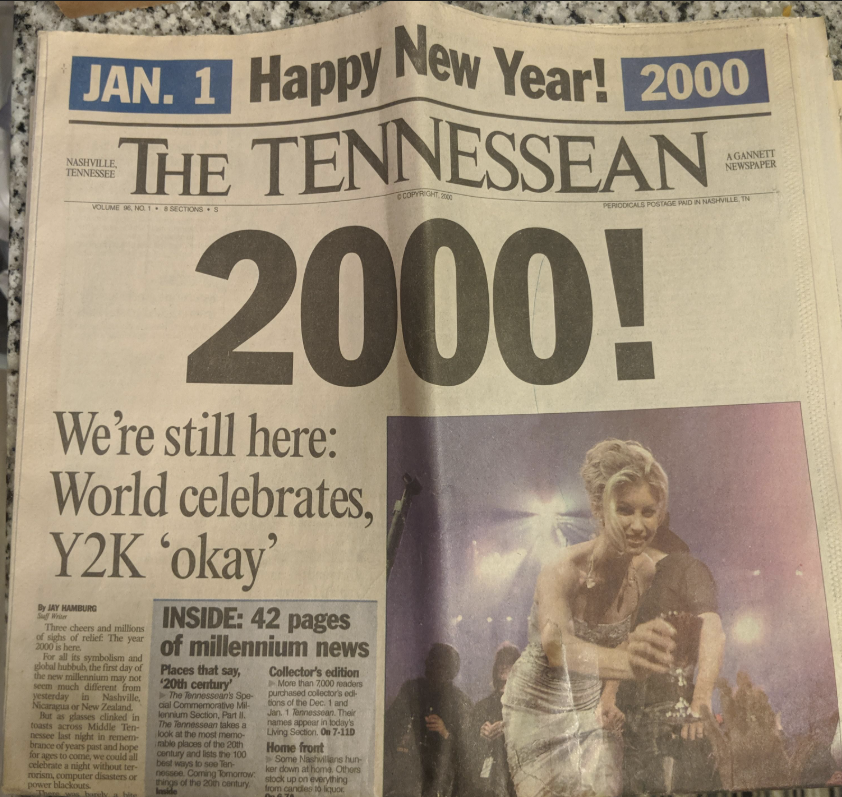
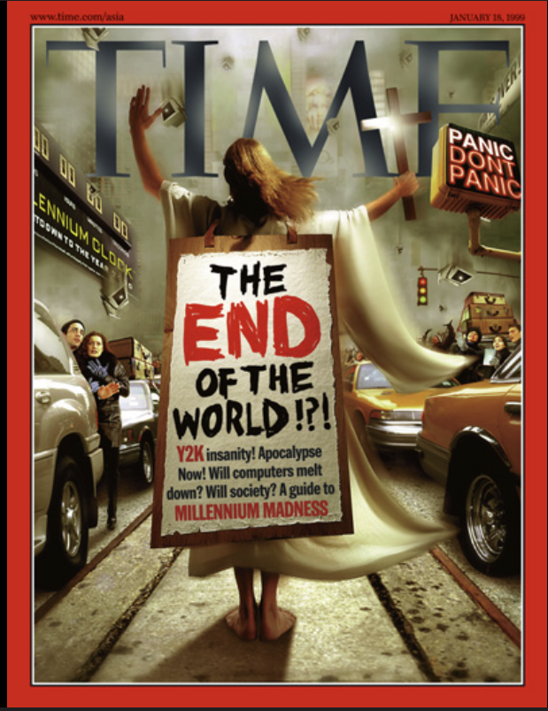
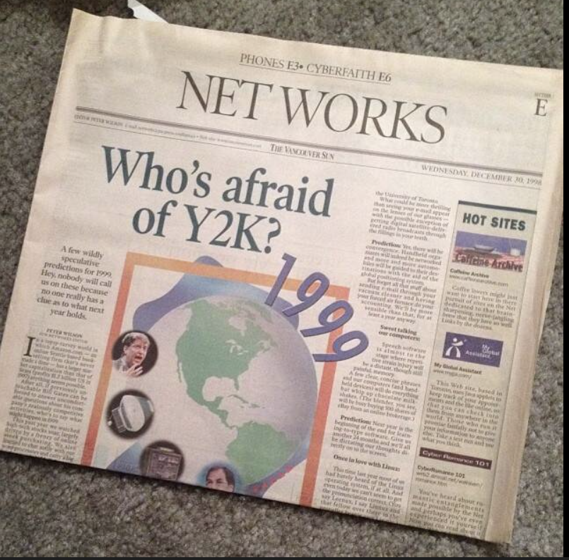

News Papers Coverage from 90s



Videos
A short video showing Celebrities' reactions to Y2K.
News coverage from FOX News Archive showing how people reacted to the Y2K crisis.
A recap explaining why Y2K happened and what was fixed.
Y2K Warning Clip "Planning"
Man prepares for Y2K doomsday amid panic in 1999, saying no one knows what is going to happen and that people have to prepare.
News archive: Asking people in shopping malls how they prepared for Y2K.